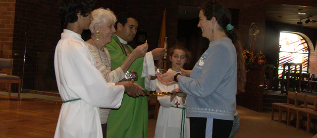

Where All Are Welcome
Call the Parish office : (916) 985-2065
Eucharist

- Eucharistia means thanksgiving, and the Eucharist is the "source and summit of the Christian life." St. Justin Martyr described the Eucharistic Liturgy in 155 AD in his First Apology. The Paschal mystery of Christ is celebrated in the liturgy of the Mass. The Mass is the Eucharist or principal sacramental celebration of the Church, established by Jesus at the Last Supper, in which the mystery of our salvation through participation in the sacrificial death and glorious resurrection of Christ is renewed and accomplished. The word "Mass" comes from the Latin missa, as it refers to the mission or sending forth of the faithful following the celebration, so that they may fulfill God's will in their daily lives.
- The essential signs of the sacrament are wheat bread and grape wine, on which the blessing of the Holy Spirit is invoked during the Sacrifice of the Mass, and the priest pronounces the words of consecration spoken by Jesus at the Last Supper: "This is my body...This is the cup of my blood..." (Matthew 26:26-28, Mark 14:22-24, 1 Corinthians 11:23-26).
- Jesus died once on the cross in sacrifice for our sins (Hebrews 9:25-28). But Jesus is present for all time, as he is the eternal Son of God. What he did once in history also then exists for all eternity. What happened in time goes beyond time. In the heart of Jesus he is always giving himself to the Father for us, as he did on the Cross. When we celebrate the Mass, the sacrifice of the cross, that happened once in history but is present for all eternity, that same reality is made present in mystery.3
- The bread and wine through Transubstantiation become the Body and Blood, Soul and Divinity of Jesus Christ, and we receive the Real Presence of Jesus when we receive Holy Communion. Our soul is nourished, helping us to become like Christ. The Eucharist is the heart and source of community within the Church. Receiving Holy Communion with others during the Mass brings unity of the Church, the Body of Christ (I Corinthians 10:16-17).
| Sacrament | Biblical Basis | Central Words | Central Actions | Effects |
|---|---|---|---|---|
| EUCHARIST | Mark 14:22-25; Matt 26:26-30; Luke 22:14-23; 1 Cor 11:23-25 - Jesus' "Last Supper" with his disciples; John 6: 48-58 - the end of the Bread of Life discourse: "eat my flesh; drink my blood"; Luke 24:35; Acts 2:42 - Christians gather for the "Breaking of the Bread" |
"This is my body... This is my blood..." (the "Words of Institution" from the Last Supper) |
The bread and wine are blessed/consecrated by the minister and received/shared by the communicants. |
Being spiritually nourished by Christ's body and blood; being united ("in communion") with Christ and other believers. |
Eucharist at St. John the Baptist
2nd Grade:
- Children receive their First Reconciliation and then First Eucharist after they have completed two years of Religious Education instruction. The First Eucharist ceremonies are usually held on the first weekend in May.
3rd Grade - High School:
- Children who have been baptized into the Roman Catholic Church, but who have not received the sacraments of First Reconciliation and First Eucharist will attend special sacrament formation classes during their second year of instruction.